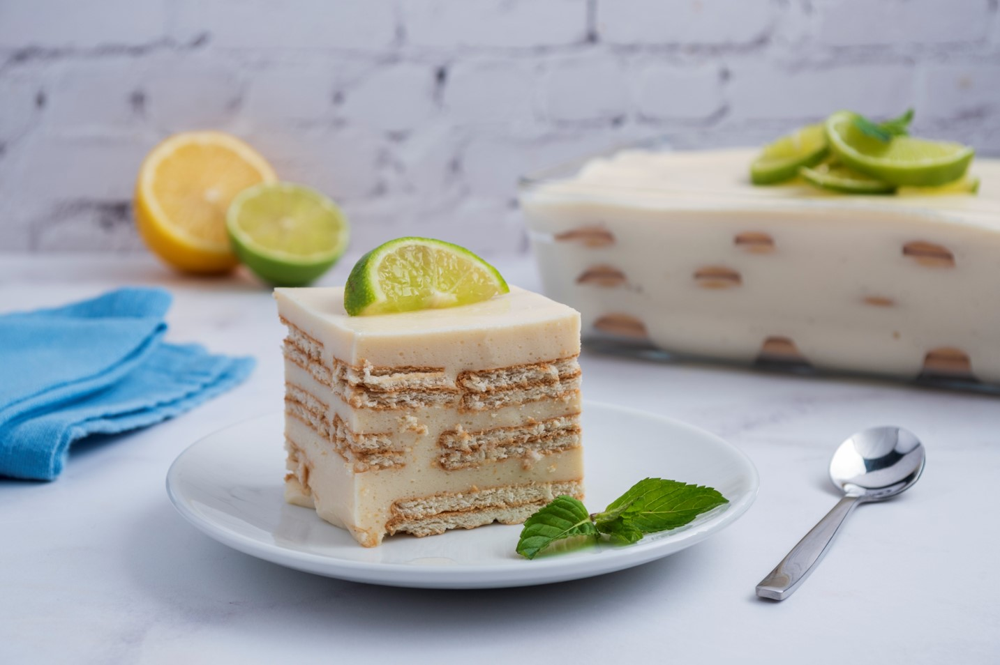

Home
Carlota de limón

Descrición
La carlota de limón es un postre cremoso sin horno compuesto por capas de galleta maría y una deliciosa crema de limón. Se sirve muy frío y es ideal para los días de verano.
ingredientes
- 8 limones
- 600 g de leche condensada
- 550 g de leche evaporada
- 220 de galletas maría (36 galletas)
Instrucciones
- Exprimimos los limones
- Vertemos la leche condensada y la leche evaporada en el procesador de alimentos
- Añadimos el zumo de limón a través de un colador para deshacernos de las pepitas y trituramos la crema
- Ponemos una capa de galletas en el molde y una primera capa de crema de limó
- Hacemos tres capas más de galletas y crema de limón
- Acabamos con crema de limón y llevamos a la nevera
- Presentamos la carlota decorada con rodajas de limón y galletas trituradas, y la servimos muy fría